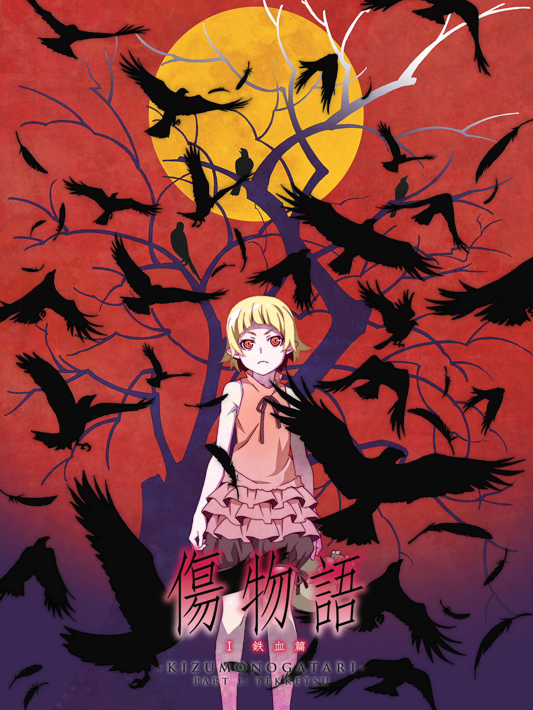

Bakemonogatari
15 Episodes
2009 - 2010

Kizumonogatari
3 Movies
2016 | 2017
This is the order in which the Monogatari series was originally released to the public. It's recommended for new viewers as it preserves the intended mystery of the narrative, gradually unveiling the story's secrets. Watching in this order replicates the original experience of the audience as the series unfolded.
15 Episodes
2009 - 2010
3 Movies
2016 | 2017
The chronological order presents the story as it happens in the timeline of the Monogatari universe...
This order combines elements of release and chronological order for a balanced viewing experience...
A collection of artistic backgrounds and images related to the Monogatari series...